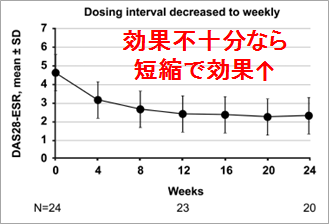
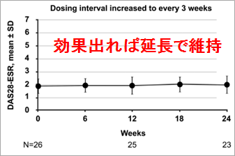

2. KEVは患者さんの状態に合わせて減量投与が可能？

KEVは患者さんの状態に合わせて150mgの投与が可能で、ACTにない減量の治療オプションが選択可能です。寛解が得られた患者さんでは、150mgに減量することで医療経済性も向上すると考えられ、まさに Beyond Remissionですね。

150mgは好中球、血小板、ALT値の値に応じた減量用規格となりますが、それでもACTより高い薬価なので医療経済性は高くありません。過去、減量しても効果は落ちないとするEXTENDの学会発表(JCR2017 ICW16-3)もあったようですが、PROs（患者関連指標）やHAQ改善は200mg > 150mgであり、KAKEHASHI試験では150mg群は200mg群に比較してCRP陰性化率が低いことも報告されています。MUSASHI長期データでは、寛解もしくは低疾患活動性の維持例には3週間隔への投与間隔延長が行われており、患者さんの状態に合わせた投与間隔の調整が可能です。効果不十分時にはQW投与も可能であり、これはKEVにない重要な点ではないでしょうか。また、ACTは患者さんの希望やライフスタイルに合わせて点滴での投与も選択を頂けます。
MUSASHIにおける投与間隔短縮例及び延長例でのDAS28推移


A Ogata, et al. The Journal of Rheumatology 2015;42:5:799-809.